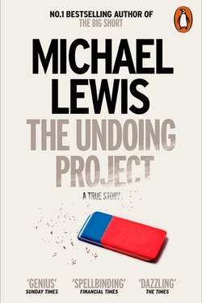

Library › Psychology & People
The Undoing Project — Summary & Key Lessons

Daniel Kahneman and Amos Tversky — the friendship and the ideas that undid psychology's faith in human reason.
📖 OPEN THE FULL INTERACTIVE BREAKDOWN →🌐 Read it in Hindi, Hinglish, Gujarati, Tamil & 22 more languages — free, with audio.
💡 The Big Idea
Lewis tells the story of the oddest and most fruitful partnership in modern science: Tversky (fast, confident, brilliant) and Kahneman (slow, self-doubting, brilliant). Together they revealed that human judgement is systematically biased — we are not rational calculators but pattern-machines running on shortcuts. The pair's work 'undid' the rational actor at the heart of economics, and their friendship is the human engine of the story.
🧠 The 6 Key Lessons
Lesson 1: The Odd Couple Engine
Chapter 1: The Partnership
The science came from a relationship: Amos's speed and brashness against Danny's slowness and doubt produced a division of labour — Amos found the problems, Danny did the worrying, together they checked each other. The lesson for teams: productive tension between trust and doubt is the engine of breakthroughs.
📖 Example: The 'solo genius' myth hides that most great work is a duet of complementary temperaments. Read the full example →
⚡ Do this: Find one person who pushes back on you — and schedule a standing argument, in service of the work.
Lesson 2: Anchoring: The First Number Wins
Chapter 2: Heuristics
The pair's first famous discovery: the anchor. Whatever number you see first drags your estimate — whether it is a suggested price, a spinning wheel of fortune, or your starting salary. The effect survives even when you know it. The lesson: in any negotiation or estimate, the first number is not information; it is magnetism.
📖 Example: A condominium's list price anchors every offer; a 'sale' price anchors the perceived value of the old price. Read the full example →
⚡ Do this: In your next negotiation, write your independent estimate BEFORE hearing theirs — and bring data.
Lesson 3: Availability: What Is Easy to Remember Feels Important
Chapter 3: Availability
We judge probability by ease of recall, not by statistics. Plane crashes feel likely after a crash; shark attacks feel common after a movie; your most recent failure colours your whole capability. The bias is exploitable by news and by memory itself. Correction: seek base rates, not vividness.
📖 Example: After a friend's break-in, home-security sales rise — though objective risk never changed. Read the full example →
⚡ Do this: For one important probability judgment, look up the base rate instead of trusting the vivid example.
Lesson 4: Prospect Theory: Losses Scream Louder
Chapter 4: The Code
The pair's Nobel-winning theory: we feel losses about twice as powerfully as equivalent gains, and we evaluate outcomes relative to a reference point, not in absolute terms. That is why people hold losing stocks, join losing wars, and fear change more than stagnation — the loss frame hijacks rationality.
📖 Example: An investor refuses to sell a falling stock 'until it recovers' — recovering to a reference point, not to value. Read the full example →
⚡ Do this: When a decision is framed as 'don't lose X', reframe it as 'gain or lose Y' — then decide.
Lesson 5: The Confidence Trap
Chapter 5: Overconfidence
The most consequential finding: we are chronically overconfident, because confidence is built on the coherence of our story, not on evidence. Experts are worse — their story is more polished. The fix is not less confidence but 'outside view' thinking: ask what usually happens to people in this situation, before asking what you think will happen.
📖 Example: Entrepreneurs' 'hopeful' forecasts are consistently too rosy; base rates say most similar ventures fail. Read the full example →
⚡ Do this: For your next big prediction, write the base rate of similar cases first — then your forecast.
Lesson 6: The Conjunction Fallacy: Linda the Bank Teller
Chapter 6: The Linda Problem
The most famous problem in judgment research: subjects rate 'Linda is a bank teller and an active feminist' as more probable than 'Linda is a bank teller' — mathematically impossible, because adding a detail can never raise a probability. The added detail only raises the story's vividness. The same machinery makes a business plan with colourful details feel more credible than the underlying odds — narrative is not evidence.
📖 Example: A pitch with a vivid founder story gets funded more than an identical one without it; investors are answering a probability question with a story instinct. Read the full example →
⚡ Do this: When a story feels true, delete its details and recompute the probability from the base rate alone — then decide.
✅ 5-Step Action Plan
- Set up one standing argument with a trusted doubter.
- Write independent estimates before hearing anchors.
- Replace vivid examples with base rates in one judgment.
- Reframe loss-framed decisions into gain/loss terms.
- Run the outside view on your next forecast.
⚠️ When This Doesn't Work
Lewis's narrative prioritises story over scientific detail; replication debates (notably on 'priming') have since softened parts of the original work. The big ideas — anchoring, loss aversion, overconfidence — remain robust.
💀 The Graveyard Proves It
📷 Long-Term Capital Management — Two Nobel Prizes, One Bankruptcy. Burn: $4.6B in 4 months Read the full case study →
💬 Best Quotes from The Undoing Project
- “The confidence that individuals have in their beliefs depends mostly on the quality of the story they can tell about what they see.”
- “If you can't measure it, that doesn't mean it doesn't matter.”
- “They took a photograph of the human mind's limitations and hung it in the trophy case of science.”
Interactive version: mark lessons as read, listen in your language, share quote cards.